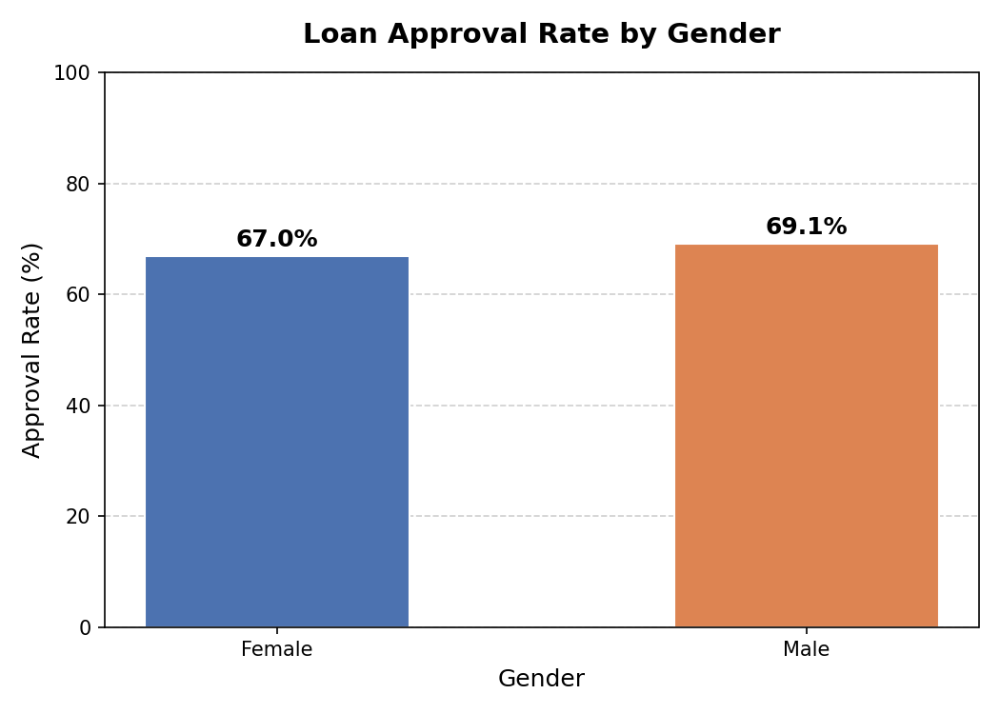
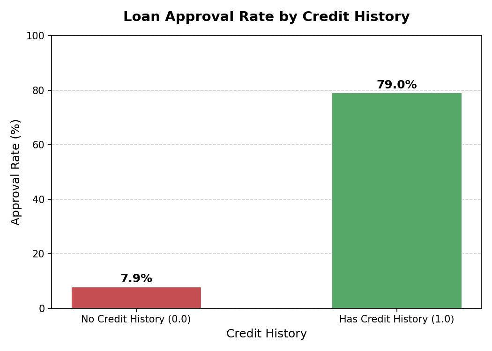
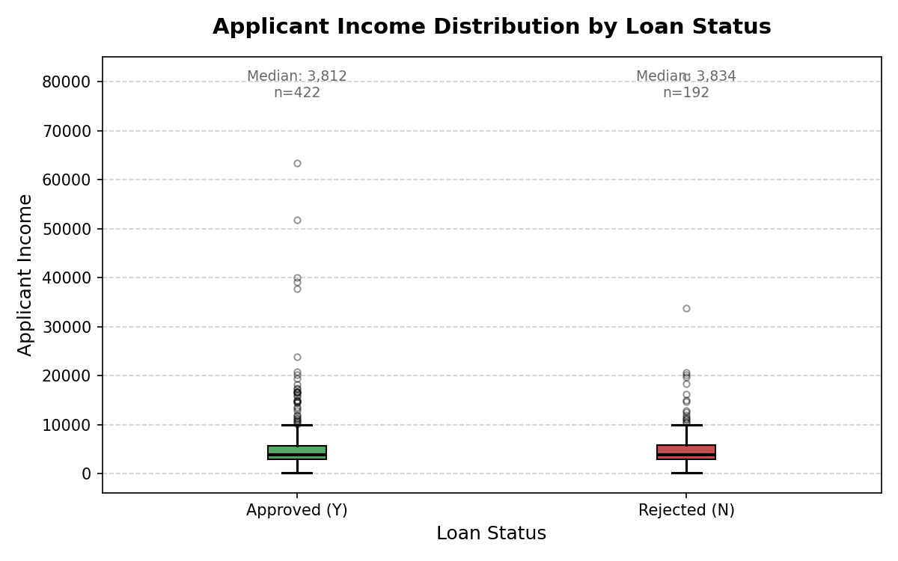
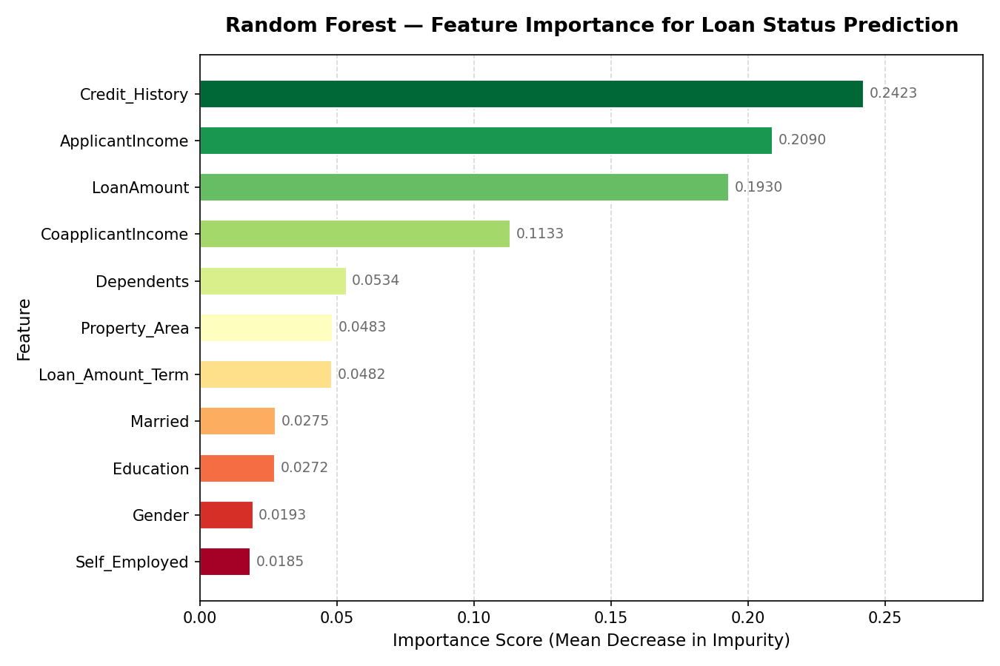
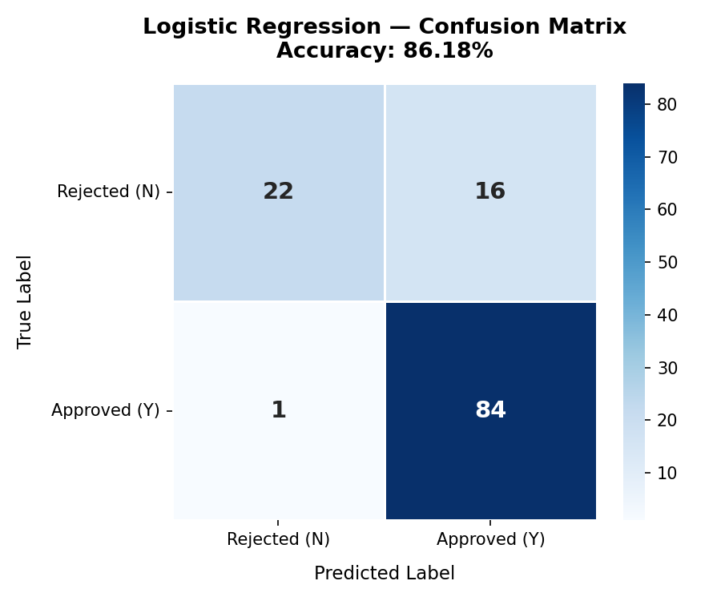

An end-to-end credit risk analysis using a real-world dataset of 614 loan applicants. We explored approval patterns, built predictive models, and identified the features that matter most to lenders.
Dataset snapshot and key statistics after cleaning
The dataset contains loan application records including applicant demographics
(gender, marital status, dependents, education), financial details
(applicant income, co-applicant income, loan amount, loan term), credit
history, and property area. The target variable is Loan_Status
— whether the loan was approved (Y) or rejected (N).
Missing values across 7 columns were imputed using median for
numerical features and mode for categorical features before
any modelling was performed.
What patterns emerge before any modelling?

Male and female applicants have broadly similar approval rates, with males marginally higher. Gender alone is a weak predictor — the overlap suggests other factors (income, credit history) drive decisions far more than gender does.

This is the starkest split in the entire dataset. Applicants with a credit history are approved at a dramatically higher rate than those without one. Having no credit history is effectively a near-automatic rejection — making it the single most important factor in the dataset.

Approved and rejected applicants share a very similar income distribution — the medians are close and both groups contain high-income outliers. This tells us income alone does not determine approval. Lenders are weighing creditworthiness and loan size relative to income, not income in isolation.

The Random Forest confirms that Credit History is the top predictor, followed by Applicant Income and Loan Amount. Together these three account for over 60% of the model's predictive power. Demographic features like gender, marital status, and self-employment sit at the bottom — almost irrelevant once financial features are known.

The logistic regression model achieves 86.18% accuracy on unseen test data. It correctly identifies the vast majority of approved loans (84 out of 85) but misclassifies 16 rejected loans as approved. See the Model Results section below for the full business interpretation.
Logistic Regression evaluated on a held-out 20% test set (123 applicants)
The logistic regression model correctly classified 106 out of 123 test applicants. It outperformed the Random Forest (82.9%) on this dataset, likely because the decision boundary between approved and rejected loans is broadly linear once features are scaled.
22 True Negatives Correctly rejected
84 True Positives Correctly approved
16 False Positives Rejected but approved
1 False Negative Approved but rejected
The model is highly sensitive to approvals (recall 99%) but
only catches 58% of true rejections — it leans toward approving.
Each false positive represents a loan that should have been
rejected but was approved by the model. In a real lending
context these are the costliest errors — they translate directly
to credit losses if the borrower defaults.
A production model should be tuned to reduce false positives by
lowering the classification threshold (e.g. from 0.5 to 0.35),
accepting slightly more false negatives (missed approvals) in
exchange for fewer bad loans issued.
| Predicted: Rejected (N) | Predicted: Approved (Y) | |
|---|---|---|
| Actual: Rejected (N) | 22 ✓ True Negative | 16 ✗ False Positive |
| Actual: Approved (Y) | 1 ✗ False Negative | 84 ✓ True Positive |